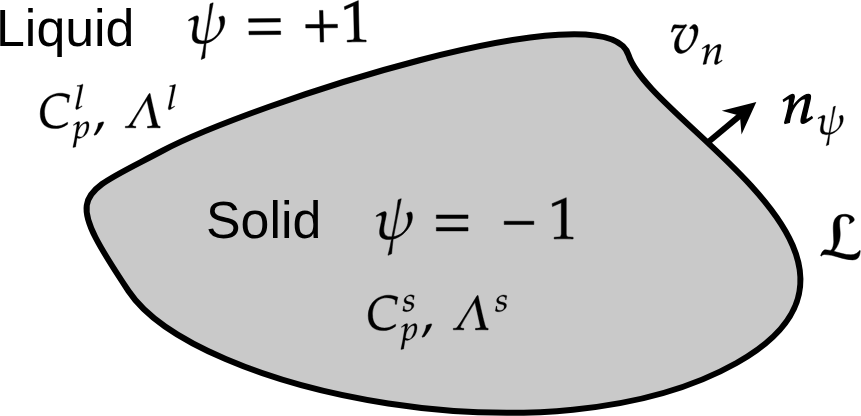
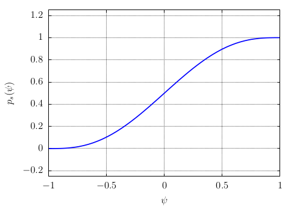
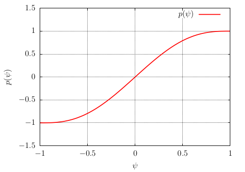

Models of solid-liquid phase change
Useful thermodynamic relations for phase change
Specific heat (dim \([\text{E}]/([\text{M}].[\Theta])\)
Latent heat at melting temperature \(T_m\) (dim [E]/[M])
Thermodynamic Maxwell relations
Proof of Eq. () with \(\mathcal{U}(V,S)\)
Proof of Eq. () with \(\mathcal{F}(V,T)\)
Solidification and crystal growth
Solidification of a pure substance and Stefan’s problem
We consider at the melting temperature \(T_m\), the coexistence of a chemical specie \(A\) into two phases: a tiny solid seed inside a liquid bath of same specie. The temperature of the system \(T\) is quenched below the melting temperature \(T<T_m\). Then the solidification occurs: the small seed grows i.e. the liquid becomes solid and the excess of latent heat \(\mathcal{L}\) is released at the interface and advected with the normal velocity of the interface \(v_n\). The modeling of that phase change problem is performed with the classical Stefan’s problem.
Stefan’s problem of phase change
The Stefan’s model of phase change is composed of three equations: the heat equation with two conditions at interface between solid and liquid:
where \(T\) is the temperature, \(\Lambda_{\Phi}\) is the thermal conductivity for both phases \(\Phi=0,1\). The first interface condition is the Stefan condition (conservation at interface):
where \(\hat{\boldsymbol{n}}\) is the normal vector at interface, and \(v_{n}\) the normal velocity of the interface, \(\mathcal{L}\) is the latent heat. The second interface condition is the Gibbs-Thomson condition:
where \(T_i\) is the temperature at the interface, \(T_{m}\) is the melting temperature, \(\sigma\) is the surface tension, \(\mathcal{L}\) is the latent heat, \(\kappa\) is the curvature, \(m_{k}\) is the interface mobility, and \(v_{n}\) is the normal velocity of interface.
Free energy density \(\mathscr{F}\)
The Stefan’s problem is a “sharp interface” modelling. Here, an equivalent diffuse interface is derived. We introduce a phase-field \(\psi=\pm1\): \(\psi=-1\) in the solid phase and \(\psi=+1\) in the liquid phase.
{kind=link}

Solidification
The free energy density is now the functional of two functions \(\psi\) and \(T\)
That free energy density contains two contributions: the first one is the interface contribution \(\mathcal{F}_{int}(\psi,\boldsymbol{\nabla}\psi)\) and the second one the bulk free energy density \(f_{bulk}(\psi,T)\). The first one is standard. It is defined by a double-well plus a gradient energy term:
where the double-well is defined by
the minima are \(\psi^{\star}=\pm1\). With that double-well free energy, the Euler-Lagrange solution and the interface have already been discussed in Alternative forms of double-wells: the equilibrium solution is \(\psi^{eq}(x)=\psi^{\star}\tanh\left(2x/W\right)\), the interface width is \(W=\frac{1}{\psi^{\star}}\sqrt{\frac{2\zeta}{H}}\) and the surface tension is \(\sigma=\frac{4}{3}\sqrt{2\zeta H}\).
The bulk free energy density takes into account the free energy of each phase \({\color{red}f_{s}(T)}\) in the solid and \({\color{red}f_{l}(T)}\) in the liquid:
where \(p_{s}(\psi)\) is an interpolation polynomial defined by:
of minimum and maximum values between 0 and 1 (see Fig. Fig-Polynom-ps-psi). It is defined by \(p(\psi)\) of minimum and maximum values -1 and +1 (see Fig. Fig-Polynom-p-psi)
{kind=link}

Interpolation function \(p_s(\psi)\)
{kind=link}

Interpolation function \(p(\psi)\)
Variation of \(\mathscr{F}\)
The variation of \(\mathscr{F}\) writes:
Temperature equation
Temperature equation
The conservation of internal energy density \(e\) writes:
where the Fourier law has been assumed for the diffusive flux. After expressing the internal energy \(e(\phi,s)\) as a function of \(T\) (see proof below), we obtain:
Proof
Variation of \(\mathscr{F}\) wrt \(T\): opposite of entropy
()\[\begin{split}s(\psi,T)&=-\frac{\delta\mathscr{F}}{\delta T}\\ &=-\frac{\partial f_{bulk}(\psi,T)}{\partial T}\\ &=-p_{s}(\psi)\underbrace{\frac{\partial f_{s}}{\partial T}}_{s_{s}(T)}-\left[1-p_{s}(\psi)\right]\underbrace{\frac{\partial f_{l}}{\partial T}}_{s_{l}(T)}\end{split}\]Thermo identity (\(de=Tds\)) and chain rule
\[\begin{split}de&=Tds(\psi,T)\\ &=\underbrace{T\frac{\partial s}{\partial T}}_{C_{p}\text{: specific heat}}dT+T\underbrace{\frac{\partial s}{\partial\psi}}_{\text{use previous Eq.}}d\psi\end{split}\]For the first term of the right-hand side we use the definition of specific heat Eq. (). For the second term we derive Eq. () wrt \(\psi\). After division by \(dt\), we obtain
()\[\frac{\partial e}{\partial t} =C_{p}\frac{\partial T}{\partial t}+p_{s}^{\prime}(\psi)\underbrace{T\left[s_{l}(T)-s_{s}(T)\right]}_{\equiv\mathcal{L}\text{: latent heat}}\frac{\partial\psi}{\partial t}\]
Phase-field equation
The dynamic of \(\psi\) must obey to the following Allen-Cahn equation Eq. (462) to minimize the free energy:
To calculate the variation of \(\mathscr{F}\) wrt \(\psi\), we use Eq. ():
To simplify the thermodynamic driving source, a common hypothesis is to consider the temperature \(T\) close to the melting temperature \(T_m\). A Taylor expansion yields:
where \(\Phi=s,l\). At \(T_m\), \(f_l(T_m)=f_s(T_m)\) and the latent heat is () \(\mathcal{L}=T_{m}[s_{l}(T_{m})-s_{s}(T_{m})]\). Finally
In the right-hand side, the coefficient \(H\) is set in factor:
and we define new coefficients:
Finally we obtain for the phase-field equation:
Phase-field equation
Summary
Phase-field model of solidification
The phase-field model of solidification is composed of one phase-field equation for the interface:
coupled with one temperature equation:
Equivalence between phase-field model and Stefan’s problem
Equivalence between sharp and diffuse interface models
The sharp interface model (Stefan’s problem) and the phase-field model expressed with the dimensionless temperature \(\theta=(T-T_{m})C_{p}/\mathcal{L}\) write:
where \(\theta\) is the dimensionless temperature, \(d_{0}=\sigma_{0}T_{m}C_{p}/\mathcal{L}^{2}\) is the capillary length, and \(\beta=C_{p}/\mathcal{L}m\) is the kinetic coefficient. With the matched asymptotic expansions, it is proved that both models are equivalent provided that the two following conditions hold:
where \({\color{teal}a_{1}}=0.8839\) and \({\color{teal}a_{2}}=0.6267\). In the right-hand side of Eqs. () and () lambda, W_{0} and tau_{0} are the parameters of the phase-field model.